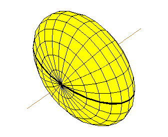
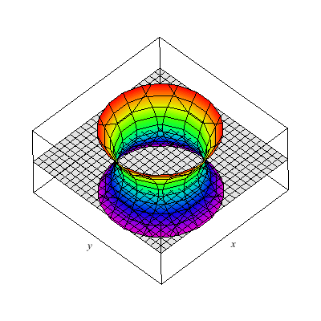
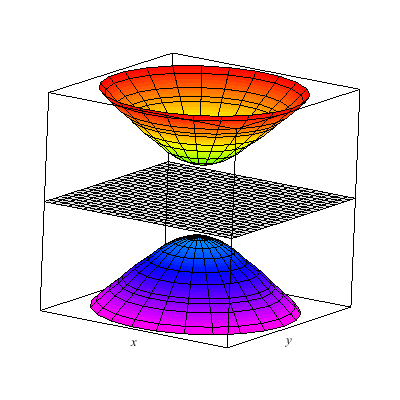
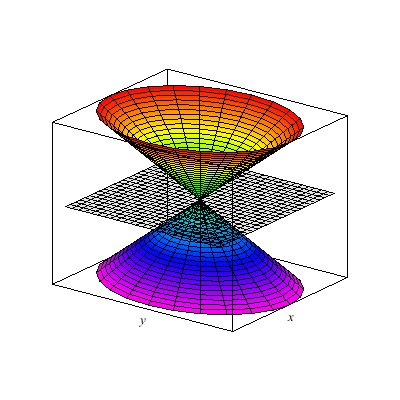
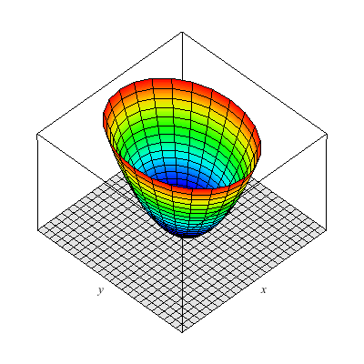
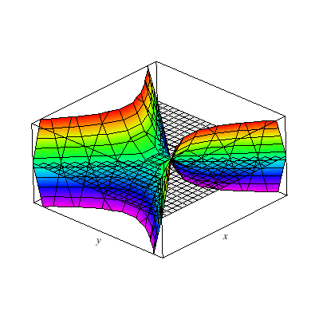

← Back
Cylinders
- Their equations only have two variables.
- These equations give a trace of the curve on the coordinate plane of the two given coordinates.
- The curve is directed along the axes of the missing variable.
- The curve/trace does not change along the direction axes.
Steps to Draw Cylinders
- Find trace along the coordinate plane.
- Direct it towards the direction of the missing axis.
- To draw a cylinder of $y = x^2$, for example, first draw the parabola on the $xy$ plane, then direct it along the $z$-axis.
General Surfaces
- Have all three variables.
- Traces occur on coordinate planes or planes parallel to coordinate planes.
- Still directed along an axis but changes along it.
Steps to Draw Surfaces
- Determine the type of surface.
- Determine the direction axis.
- Find the trace on the coordinate plane.
- Find at least two other traces.
Some Common Types of Surfaces
Ellipsoids
- General form:
$$\frac{x^2}{a^2} + \frac{y^2}{b^2} + \frac{z^2}{c^2} = 1$$
- How to tell:
- All have positive coefficients.
- All have a power of 2.
- Has a constant.
- Intercepts:
- $x = \pm a$
- $y = \pm b$
- $z = \pm c$

An ellipsoid.
1-Sheet Hyperboloid
- General form:
$$\frac{x^2}{a^2} + \frac{y^2}{b^2} - \frac{z^2}{c^2} = 1$$
- How to tell:
- Has one negative coefficient.
- All have a power of 2.
- Has a constant.
- Notes:
- Always decreasing along the axis with the negative coefficient.
- Set the variable with the negative coefficient to $0$ and $\pm \sqrt{\text{denominator}}$ to get three traces, which are usually circles or ellipses.

One-sheet Hyperboloid.
2-Sheet Hyperboloid
- General form:
$$\frac{x^2}{a^2} - \frac{y^2}{b^2} - \frac{z^2}{c^2} = 1$$
- How to tell:
- Has one positive coefficient.
- All have a power of 2.
- Has a constant.
- Notes:
- Set both variables with negative coefficients to $0$ to get the axis intercepts.
- Use a variable divisible by the positive coefficient's denominator to obtain a cross-section (as an ellipse or circle) of both parts of the Hyperboloid.

Two-sheet Hyperboloid.
Cones
- General form:
$$\frac{x^2}{a^2} + \frac{y^2}{b^2} - \frac{z^2}{c^2} = 0$$
- How to tell:
- Has one negative coefficient.
- All have a power of 2.
- Has no constants.
- Notes:
- Place in a value divisible by $\pm \sqrt{\text{denominator}}$ of the variable with the negative coefficient to get an ellipse or circle on opposite ends of the axis with the negative coefficient.

An elliptical cone.
Paraboloids
- General form:
$$\frac{x^2}{a^2} + \frac{y^2}{b^2} = cz + d$$
- How to tell:
- Has three variables with two having a power of two and one having a power of one.
- Variables with a power of two have positive coefficients.
- Opens up along the direction of the axis with the power of one.
- Along the axis it opens up with, it "shifts" along $-d$.
- Notes:
- Set the variable with the degree of one to $0$ to get a trace on the coordinate plane.

An elliptical Paraboloid.
Hyperbolic Paraboloids
- General form:
$$\frac{x^2}{a^2} - \frac{y^2}{b^2} = cz + d$$
- How to tell:
- Three variables with two having a power of two and one having a power of one.
- One of the variables with the power of two has a negative coefficient.
- Notes:
- The degree-one variable is the direction axis.
- Plug in positive and negative values to the degree-one variable to give two different sets of equations that describe the trace.

Hyperbolic Paraboloid.